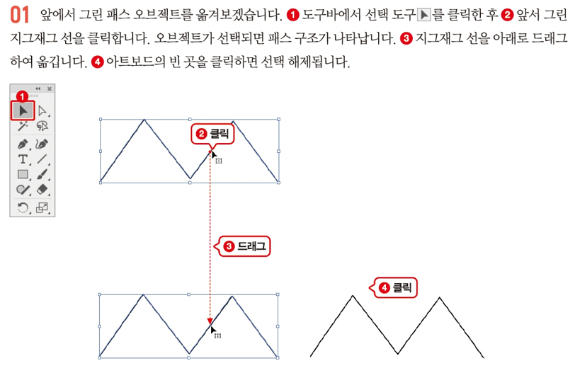
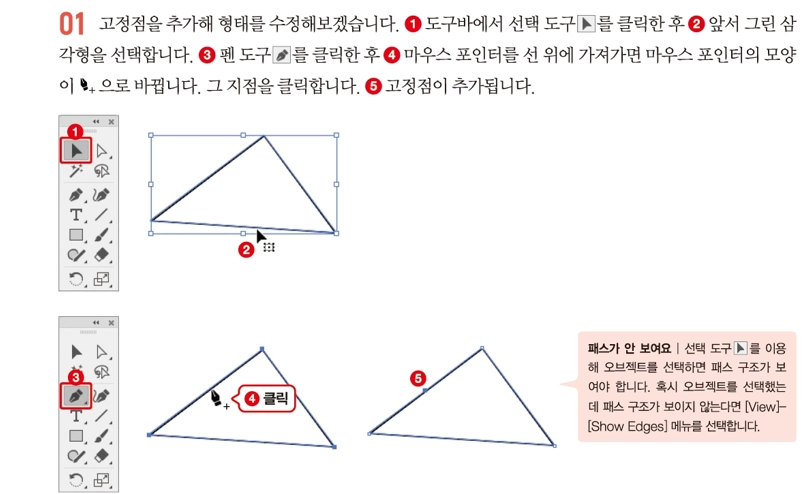

[10차시] 02-01_기초 / 02_저장 / 03_아트보드 / 04_패스
1. 일러스트레이터의 필수 지식
1.1. RGB 모드와 CMYK 모드


RGB: Red, Green, Blue
CMYK: Cyan(청록색, 밝은 파랑), Magenta(자홍색, 밝은 분홍), Yellow, Black
1.2. 비트맵과 벡터의 차이

1.3. 레이어의 개념

2. 파일 저장하기

다양한 형식으로 저장하기.ai (click🖱️)
2.1. 다양한 형식으로 저장하기
2.1.1. 배경이 투명한 PNG 파일로 저장하기
[File] - [Export] - [Export As] *.PNG 파일 선택
2.1.2. PSD 파일로 저장하기
[File] - [Export] - [Export As] *.PSD 파일 선택
2.1.3. 웹에서 볼 수 있는 파일로 저장하기
[File] - [Export] - [Save for Web(Legacy)] *.GIF / JPG / PNG 파일 선택
2.1.4. 한번에 여러 가지 포맷으로 저장하기
[File] - [Export] - [Export For Screens] - [Artboards] - [Export to] [+Add Scale]
2.1.5. [Asset Export] 패널로 오브젝트의 한 부분만 저장하기
[Window] - [Asset Export] - [Asset Export]
2.2. 확대, 축소, 이동, 회전하기

확대 축소하기.ai (click🖱️)
3. 아트 보드

4. 패스(Path)로 선, 면 그리기
4.1. 패스란?
- 어도비 일러스트레이터에서 패스(Path)란 하나 이상의 점과 이들을 연결하는 선으로 이루어진 베지어 곡선(Vector)의 기본 단위를 말함.
- 일러스트레이터에서 그리거나 만드는 모든 도형, 선, 글자 윤곽선은 패스로 구성됨.

4.2. 패스의 구성요소 & 종류

- 기준점 (Anchor Point): 패스의 방향과 곡률이 시작되고 바뀌는 거점
- 선 세그먼트 (Line Segment): 두 기준점 사이를 연결하는 직선 또는 곡선 구간
- 방향선 및 방향점 (Direction Line & Handle): 곡선 기준점을 클릭했을 때 나타나는 핸들. 이 핸들의 길이에 따라 곡선의 기울기와 완만함이 결정됨.
| 종류 | 설명 | 예시 |
|---|---|---|
| 열린 패스 (Open Path) | 시작점과 끝점이 연결되지 않고 뚫려 있는 패스 | 일반 선, S자 곡선, 펜 툴로 그린 미완성 선 |
| 닫힌 패스 (Closed Path) | 시작점과 끝점이 하나로 이어져 면을 이루는 패스 | 사각형, 원, 별 모양 등 모든 도형 |
4.3. 직선 & 곡선 & 면 그리기
4.3.1. 직선 그리기

4.3.2. 곡선 그리기

4.3.3. 면 그리기

4.3.4. 오브젝트 옮기기


4.3.5. 고정점 추가, 삭제


4.3.6. 직선을 곡선으로 만들기

4.3.7. 굵기 수정하기 & 점선으로 만들기